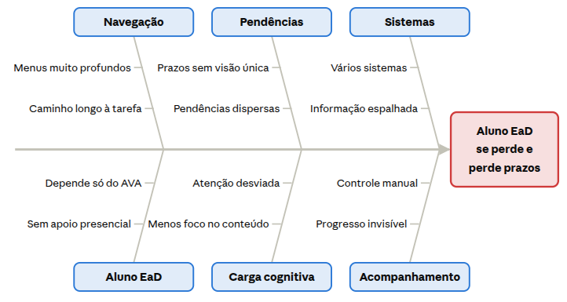
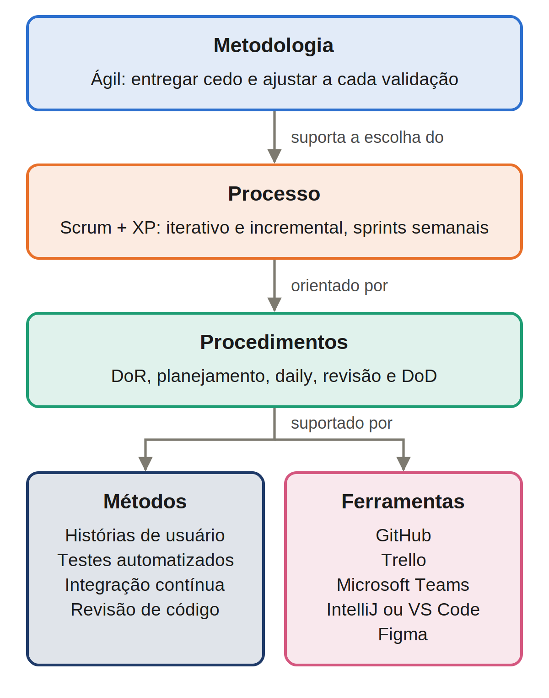

[Turma 3 Torvalds - cAnCHA]
VISÃO DO PRODUTO E DO PROJETO
Versão 1.3
Integrantes do Grupo
| Mat. | Nome | Função (responsabilidade) | Pontos de participação na elaboração |
|---|---|---|---|
| 231036800 | Gustavo Linhares Lima | Desenvolvedor | 13.5 |
| 232014469 | Jefferson de Souza Reis | Desenvolvedor | 12.5 |
| 242004967 | Pedro Lucas Souza Silva | Desenvolvedor | 12.5 |
| 242015719 | Thiago Kauã de Sousa Cardoso | Desenvolvedor | 12.5 |
| 251036440 | Eduardo | Product Owner | 12.5 |
| 232014692 | João Lucas R. Cabral | Designer/QA | 15 |
| 232024554 | Ana Jullia B. M. Lopes | Scrum Master/QA | 12.5 |
| 241040341 | Pedro Henrique Galdino | Desenvolvedor | 9 |
| Total de pontos (devem fechar 100 pontos para toda a equipe) | 100 |
Histórico de Revisões
| Data | Versão | Descrição | Autor |
|---|---|---|---|
| 30/09 | 1.0 | Versão inicial do Documento de Visão. | Grupo Torvalds |
| 16/10 | 1.1 | Alteração do nome do produto de “Folha Digital” para “cAnCHA” e reorganização das sprints | Ana Jullia |
| 09/11 | 1.2 | Correções da avaliação do professor: tecnologia do back-end, papéis, ciclo de vida, critérios de aceitação, GQM e testes. | Ana Jullia / Eduardo |
| 11/11 | 1.3 | Resultado da Sprint 7 na Sprint Review: entregáveis concluídos (100%) e release v0.1.0 publicada na main em 11/11, dois dias depois do previsto. | Eduardo |
Sumário
- 1 VISÃO GERAL DO PRODUTO
- 1.1 Problema
- 1.2 Declaração de Posição do Produto
- 1.3 Objetivos do Produto
- 1.4 Tecnologias a Serem Utilizadas
- 2 VISÃO GERAL DO PROJETO
- 2.1 Ciclo de vida do projeto de desenvolvimento de software
- 2.2 Organização do Projeto
- 2.3 Planejamento das Fases e/ou Iterações do Projeto
- 2.4 Matriz de Comunicação
- 2.5 Gerenciamento de Riscos
- 2.6 Critérios de Replanejamento
- 3 PROCESSO DE DESENVOLVIMENTO DE SOFTWARE
- 4 DECLARAÇÃO DE ESCOPO DO PROJETO
- 4.1 Backlog do produto
- 4.1.1 Elicitação dos requisitos
- 4.2 Perfis
- 4.3 Cenários
- 4.4 Tabela de Backlog do produto
- 5 MÉTRICAS E MEDIÇÕES
- 5.1 GQM de medições
- 6 TESTES DE SOFTWARE
- 6.1 Estratégia de testes
- 6.2 Roteiro de teste
- REFERÊNCIAS
1 VISÃO GERAL DO PRODUTO
1.1 Problema
O problema se insere no contexto acadêmico do Ensino a Distância (EaD), modalidade ofertada por instituições como a UnB e que, em 2024, passou a concentrar 50,7% das matrículas de graduação do país (INEP, 2025). Nesse cenário, a relação do aluno com o curso acontece quase toda dentro do Ambiente Virtual de Aprendizagem (AVA) e de outros sistemas acadêmicos, e é por meio deles que ele localiza conteúdos, acompanha atividades e prazos e percebe o próprio avanço. Esse público é formado por estudantes de perfis variados, incluindo candidatos de programas como o Vestibular 60+ ou usuários com baixo conhecimento de tecnologia.
É justamente nessa organização que está o problema: estudantes em ambientes de EaD podem enfrentar dificuldades para localizar conteúdos, acompanhar atividades, identificar prazos e compreender seu progresso, devido à forma como as informações e interações são organizadas no ambiente. Estudantes da modalidade já apontaram dificuldades de usabilidade no AVA como fator ligado à desistência (AMBIENTES, 2025), o que revela uma oportunidade de desenvolvimento de software voltado à experiência do aluno. Para esclarecer as causas desse problema, o grupo utilizou o diagrama de Ishikawa apresentado na Figura 1.
Figura 1 – Diagrama de Ishikawa do problema de navegação no EaD

Fonte: elaborado pelo grupo (2026)
O efeito analisado, à direita do diagrama, é o aluno de EaD que se perde na navegação e perde prazos. Na parte superior estão as causas ligadas à plataforma. Em Navegação, menus profundos e caminhos longos obrigam o aluno a atravessar vários níveis até a tarefa, e hierarquias mais profundas aumentam o risco de o usuário se perder (ZAPHIRIS; KURNIAWAN; ELLIS, 2003). Em Pendências, a ausência de uma visão única de prazos e atividades impede que o aluno saiba, de relance, o que precisa entregar. Em Sistemas, o uso de vários sistemas acadêmicos espalha essa informação entre plataformas.
Na parte inferior estão as causas ligadas à rotina do aluno e ao esforço gerado. Em Aluno EaD, a dependência quase total do AVA e a ausência de apoio presencial fazem com que qualquer dificuldade na plataforma recaia diretamente sobre o estudante. Em Carga cognitiva, informações espalhadas aumentam a carga cognitiva extrínseca e reduzem a atenção disponível para aprender (COGNITIVE..., 2026). Em Acompanhamento, o controle manual e a falta de visibilidade do progresso deixam o aluno sem uma noção clara de quanto já concluiu, transferindo para ele a tarefa de organizar prazos e avanço por fora.
A leitura do diagrama mostra que a maioria das causas é estrutural: não depende do esforço do aluno, e sim de como a informação é organizada. O problema se concentra, portanto, em dois gargalos: a alta profundidade de navegação (excesso de cliques) e a falta de centralização visual das pendências, dos prazos e do progresso. Por serem causas de organização da informação, a resposta mais direta é um software que reorganize essa informação a partir da perspectiva do aluno.
A solução proposta é um software de visualização de tarefas e acompanhamento de atividades e prazos, com foco em diminuir a quantidade de cliques do usuário. O produto facilita a gestão de tarefas e de tempo, oferecendo uma interface intuitiva que auxilia o aluno a encontrar conteúdo, prazos e progresso usando o modelo mental de um caderno. Cada recurso responde a uma causa identificada no diagrama: o acesso direto às disciplinas reduz a profundidade de navegação; a agenda unificada de entregas centraliza pendências e prazos hoje dispersos entre sistemas; e o painel de progresso, alimentado pelas atividades que o aluno marca como concluídas, mostra quanto ele já avançou em cada disciplina e no período letivo. Com isso, espera-se que o aluno encontre o que precisa com menos passos e menos esforço, acompanhe seus prazos sem controles paralelos e tenha clareza sobre o próprio progresso.
1.2 Declaração de Posição do Produto
Quadro 1 – Declaração de posição do produto
| Para: | estudantes de EaD |
| Necessidade: | Uma plataforma que simplifica a gestão de atividades curriculares, facilitando o acesso às tarefas, a visualização de prazos e a compreensão do progresso dos trabalhos executados (desempenho do discente ao longo do período letivo / estudo). |
| O (nome do produto): | Uma aplicação web chamada cAnCHA. |
| Que: | Organiza a vida acadêmica do aluno como um caderno físico, possui agenda unificada de entregas (estilo kanban) e painel de progresso, possui fácil acesso às disciplinas em no máximo 3 cliques. |
| Ao contrário: | Baixo rendimento escolar para pessoas com dificuldades de navegação em plataformas já existentes; dispersão de responsabilidades entre diferentes softwares (exemplo: Aprender3, SIGAA, Notion), dificultando ainda mais a jornada estudantil. |
| Nosso produto: | Modelo mental de um caderno, facilitando a compreensão do usuário e garantindo uma maior adesão ao software, proporcionando um painel centralizado na experiência do usuário (UX) |
Fonte: elaborado pelo grupo (2026)
1.3 Objetivos do Produto
Simplificar a gestão de atividades curriculares, facilitando o acesso do estudante às tarefas, a visualização de prazos e a entrega de trabalhos.
Objetivos Específicos:
- Reduzir a quantidade de cliques necessários para localizar tarefas e materiais de aula;
- Centralizar as pendências e datas limite em um painel visual e dinâmico;
- Exibir indicadores de progresso por disciplina para auxiliar a gestão de tempo do discente.
Objetivo Secundário:
- Paralelamente, a aplicação ainda permite que o usuário mantenha anotações e registros dos conteúdos assimilados.
1.4 Tecnologias a Serem Utilizadas
Ferramentas de Desenvolvimento e Design: IntelliJ IDEA ou VS Code para codificação; Figma para o protótipo das telas; Git e GitHub para versionamento, issues e revisão por pull request; GitHub Actions para a integração contínua; Trello para o Product Backlog e o Sprint Backlog; Microsoft Teams para as reuniões.
Interface/Front-end: React com Vite, em JavaScript, como aplicação de página única (SPA); ESLint e Prettier para o padrão de código.
Back-end/API: Java 21 com Spring Boot, expondo uma API REST; Spring Security com tokens JWT para autenticação; Spring Data JPA para o acesso aos dados; Maven para o build.
Banco de dados: PostgreSQL, com o esquema versionado por migrações Flyway; banco H2 em memória nos testes automatizados.
Execução e publicação: Docker e Docker Compose no ambiente local; Render para publicar o front-end e o back-end, e Neon para o PostgreSQL publicado.
2 VISÃO GERAL DO PROJETO
2.1 Ciclo de vida do projeto de desenvolvimento de software
O projeto adota uma metodologia ágil, instanciada em um ciclo de vida híbrido, iterativo e incremental baseado em Scrum e Extreme Programming (XP), com sprints semanais. A Figura 2 mostra como essa escolha se desdobra em processo, procedimentos, métodos e ferramentas, seguindo o modelo apresentado acima.
Figura 2 – Metodologia de desenvolvimento do projeto cAnCHA

Fonte: elaborado pelo grupo (2026)
A metodologia ágil foi escolhida porque o problema é de usabilidade: não basta especificar a interface antes, é preciso verificar com frequência se ela de fato reduz passos e deixa prazos e progressos claros. Uma abordagem ágil permite entregar cedo e ajustar o produto a cada validação, em vez de fixar todos os requisitos no início.
Como processo, adota-se um ciclo de vida híbrido, iterativo e incremental fundamentado em Scrum e XP. Na fase de iniciação (Sprint 1), a equipe mapeou o problema com o diagrama de Ishikawa, elaborou este Documento de Visão e iniciou o Product Backlog. A partir da Sprint 2, cada ciclo passa a gerar incrementos do software. O Scrum organiza o trabalho em sprints semanais, com planejamento no início e revisão e retrospectiva no fim, o que viabiliza o refinamento contínuo do backlog. Cada sprint gera um incremento funcional do software, que acrescenta valor ao produto e é avaliado ao fim da sprint. O XP complementa o Scrum com práticas técnicas que mantêm o código estável entre uma entrega e outra. A sprint semanal permite que cada ajuste de interface chegue rapidamente à validação e se encaixa no ritmo do semestre.
Nos procedimentos, uma história de usuário só entra na sprint quando atende à Definição de Preparado (Definition of Ready): possui critérios de aceitação verificáveis e escopo delimitado pelo Dono do Produto, pequeno o suficiente para ser concluído em uma semana. Cada sprint começa com a seleção das histórias mais prioritárias do backlog e termina com a revisão do incremento produzido, em que o Dono do Produto, representando o aluno, valida as entregas (seção 2.2). Além dessa validação semanal, a equipe realiza testes de usabilidade com estudantes em marcos definidos do projeto, como a conclusão de uma funcionalidade principal, verificando na prática se a interface reduz os passos até a tarefa e deixa prazos e progressos claros. Ao longo da sprint, a equipe realiza reuniões semanais para acompanhar o andamento e identificar impedimentos. Uma história só é considerada concluída, conforme a Definição de Pronto (Definition of Done), quando seus testes passam na integração contínua, critério acompanhado pelo Analista de Qualidade.
Os métodos adotados são as histórias de usuário, que descrevem cada funcionalidade do ponto de vista do aluno (por exemplo, ver em uma única tela todos os prazos da semana); os testes automatizados, que verificam cada funcionalidade entregue; e a integração contínua, que executa esses testes a cada alteração enviada ao repositório. A programação em pares, prática comum do XP, não foi adotada nesta versão do projeto; em seu lugar, a qualidade do código é assegurada pela revisão de código, realizada por meio das inspeções de código atribuídas ao Analista de Qualidade (seção 2.2).
Quanto às ferramentas, o código é versionado no GitHub, que também concentra a integração contínua do projeto. O Product Backlog e o Sprint Backlog são gerenciados no Trello, o que dá transparência ao andamento de cada sprint, e as reuniões semanais acontecem pelo Microsoft Teams. A codificação é feita no IntelliJ IDEA ou no VS Code, a critério de cada integrante, e o design e a prototipação das telas são feitos no Figma.
2.2 Organização do Projeto
Quadro 2 – Organização da equipe do projeto
| Papel | Atribuições | Responsável | Participantes |
|---|---|---|---|
| Product Owner | Definir e comunicar a Meta do Produto; escrever, ordenar e refinar o Product Backlog; escrever os critérios de aceitação; aceitar ou recusar as entregas na Sprint Review; representar o aluno junto ao time. | Eduardo | Eduardo |
| Scrum Master | Garantir que os eventos aconteçam e cumpram seu objetivo; conduzir a Planning, a Review e a Retrospectiva; remover impedimentos; cuidar do processo e ensiná-lo ao time; manter o Trello e o GitHub organizados. | Ana Jullia | Ana Jullia |
| Desenvolvedores | Montar o plano da sprint; codificar o produto e os testes; revisar o código dos colegas; refatorar; cumprir a DoD; participar da daily. | Todos | Ana Jullia, Eduardo, Gustavo, Jefferson, João Lucas, Pedro Lucas, Pedro Henrique e Thiago |
| Designer | Projetar as telas e a experiência do usuário no Figma; manter o protótipo atualizado e ligado às issues; apoiar o front-end. | João Lucas | João Lucas |
| Analista de Qualidade | Manter o roteiro de testes; verificar o cumprimento da DoD; conduzir as inspeções de código; registrar defeitos e coletar as métricas de qualidade. | João Lucas | Ana Jullia e Pedro Lucas |
| Cliente | Responder ao questionário e participar dos testes de usabilidade; representado pelo PO. | Estudantes de EaD convidados | - |
Fonte: elaborado pelo grupo (2026)
2.3 Planejamento das Fases e/ou Iterações do Projeto
O planejamento foi estruturado em uma sprint de inicialização de duas semanas, seguida de nove sprints semanais, de quinta a quarta-feira, conforme o ciclo de vida da seção 2.1. A Tabela 1 apresenta, para cada sprint, a meta, as datas, os entregáveis, os marcos de avaliação da disciplina, os responsáveis e o percentual de conclusão.
O percentual é atualizado na Sprint Review de cada sprint, e toda mudança de escopo ou de data segue os critérios da seção 2.6 e é registrada no histórico de revisões. A integração entre front-end e API acontece dentro de cada história, a partir da Sprint 7; não há sprint exclusiva de integração.
Tabela 1 – Planejamento das fases e iterações do projeto
| Sprint | Produto (Entrega) | Data Início | Data Fim | Entregável(eis) | Marcos e eventos | Responsáveis | % conclusão |
|---|---|---|---|---|---|---|---|
| Sprint 1 | Definição do Produto | 16/09/26 | 30/09/26 | Documento de Visão, Backlog inicial, Ishikawa | Entrega do Doc de Visão | Todos | 100% |
| Sprint 2 | Documento de Arquitetura | 01/10/26 | 07/10/26 | Documento de Arquitetura | - | Todos | 100% |
| Sprint 3 | Apresentar Doc. Visão | 08/10/26 | 14/10/26 | Apresentação do Doc. de Visão, GQM | Apresentação | Todos | 100% |
| Sprint 4 | Apresentar Doc. Arquitetura | 15/10/26 | 21/10/26 | Apresentação do Doc. de Arquitetura | Apresentação; prova | Todos | 100% |
| Sprint 5 | Prototipar as telas | 22/10/26 | 28/10/26 | Protótipo no Figma | - | DEV, QA, DES | 100% |
| Sprint 6 | Base técnica e disciplinas | 29/10/26 | 04/11/26 | Estrutura do back-end, banco, CI, deploy, GET/disciplinas, autenticação no back-end | - | DEV, QA, SM | 100% |
| Sprint 7 | Primeira versão utilizável pelo aluno | 05/11/26 | 11/11/26 | Tela de login, Início com disciplinas e próximas entregas, página da disciplina com entregas e materiais, Agenda Kanban, Visão v1.2 | Release v0.1.0 na main em 11/11 (prevista para 09/11); Ponto de Controle em 11/11 | Todos | 100% |
| Sprint 8 | Progresso do aluno | 12/11/26 | 18/11/26 | Ajustes pedidos no Ponto de Controle; concluir entrega; progresso por disciplina e no semestre | Inspeção do código pelos inspetores | DEV, QA, PO | 0% |
| Sprint 9 | Validação e ajustes | 19/11/26 | 25/11/26 | Testes de usabilidade com 5 alunos; reparos dos defeitos da inspeção e ajustes na Agenda | Testes de usabilidade | Todos | 0% |
| Sprint 10 | Entregar o produto | 26/11/26 | 02/12/26 | Anotações, se couber; execução de CT-01 a CT-10; correções; congelamento do código, release v1.0.0 | Apresentação final | Todos | 0% |
Fonte: elaborado pelo grupo (2026)
(Aliases): PO = Product Owner; SM = Scrum Master; DEV = Desenvolvedores; DES = Designer; QA = Analista de Qualidade.
2.4 Matriz de Comunicação
Quadro 3 – Matriz de comunicação
| Evento | Objetivo | Participantes | Quem conduz | Quando | Canal | Registro |
|---|---|---|---|---|---|---|
| Sprint Planning | Definir a Meta da Sprint, escolher as histórias e dividir as tarefas | Todos | Scrum Master, o PO apresenta as prioridades | Quinta-feira, início da sprint, até 1h30 | Teams | Ata em docs/atas-reunião; cartões no Trello; issues e milestone no GitHub |
| Daily assíncrona | Cada um responde: o que eu fiz, o que eu vou fazer, o que me impede | Devs | Cada desenvolvedor; o SM acompanha os impedimentos | Segunda a sexta, até as 12h | Teams ou Grupo no WhatsApp | A própria mensagem; impedimentos viram comentário no cartão |
| Reunião semanal de acompanhamento | Atividades em andamento, riscos, compromissos, pendências e indicadores | Todos | Scrum Master | Uma vez por semana, no meio da sprint, 30min | Teams | Relatório de situação e ata (transcrição do Teams) |
| Refinamento do Backlog | Detalhar, dividir e estimar as próximas histórias; escrever critérios de aceitação | PO e Devs | PO | Uma vez por semana, antes da Planning, 30 min | Teams | Backlog do produto atualizado no Trello |
| Sprint Review | Mostrar o incremento rodando; o PO aceita ou recusa cada história; atualizar o backlog e cronograma | Todos | PO | Quarta-feira, fim da sprint, até 1h | Teams | Ata; percentual na Tabela 1; histórias aceitas fechadas |
| Retrospectiva | Avaliar como o time trabalhou e melhorar | Todos | Scrum Master | Quarta-feira, depois da Review, até 45min | Teams | Ata; cada melhoria vira um cartão com responsável |
Fonte: elaborado pelo grupo (2026)
2.5 Gerenciamento de Riscos
Os riscos são avaliados em duas escalas de 1 a 3. Probabilidade: 1 = Improvável; 2 = pode acontecer; 3 = deve acontecer. Impacto: 1 = atrasa uma tarefa; 2 = atrasa uma história; 3 = compromete uma entrega avaliada (como o Ponto de Controle). A exposição é o produto das duas notas (1 a 2 = baixa; 3 a 4 = média; 6 a 9 = alta).
- R1: Atraso por outras disciplinas (Exposição 6, alta). Mitigação: informar provas na Planning; tarefas de até dois dias. Contingência: outro integrante do grupo assume a tarefa; o PO move itens Should/Could. Responsável: Scrum Master.
- R2: Dificuldade técnica (Spring Boot, React, JWT) (Exposição 6, alta). Mitigação: código de exemplo no repositório; tirar dúvidas com quem sabe. Contingência: apoio da monitoria; fatiar a história. Responsável: Scrum Master.
- R3: Esforço subestimado (Exposição 6, alta). Mitigação: estimar com planning poker; histórias de até 5 pontos. Contingência: mover Should/Could; registrar no cronograma. Responsável: PO.
- R4: Requisitos pouco claros (Exposição 4, média). Mitigação: critérios de aceitação antes da Planning. Contingência: congelar a história e registrar no backlog. Responsável: PO.
- R5: Falta de dados acadêmicos reais (Exposição 6, alta). Mitigação: carga inicial realista, sem dados pessoais. Contingência: cadastrar por migration antes dos testes. Responsável: PO.
- R6: Poucos alunos para testes de usabilidade (Exposição 6, alta). Mitigação: recrutar desde a Sprint 7. Contingência: testes remotos; mínimo de 3 participantes. Responsável: Analista de Qualidade.
- R7: Serviço gratuito fora do ar na apresentação (Exposição 6, alta). Mitigação: acordar o serviço 5 minutos antes. Contingência: apresentar pelo ambiente local. Responsável: Desenvolvedores.
2.6 Critérios de Replanejamento
O replanejamento do projeto será acionado sempre que desvios de cronograma, problemas técnicos ou eventos imprevistos comprometerem as entregas planejadas para a sprint ou release. Abaixo estão detalhados os critérios e gatilhos de replanejamento mapeados para o projeto:
1) Replanejamento por Risco de Calendário e Avaliações
- Gatilho: Redução na disponibilidade da equipe decorrente da sobreposição com avaliações acadêmicas de outras disciplinas.
- Condição de Acionamento: Quando a capacidade estimada de pontos de história da equipe para a Sprint for reduzida em mais de 30% devido ao calendário de provas.
- Ação e Contingência: O time redistribuirá as tarefas entre os membros disponíveis e acionará o Product Owner (PO) para repactuar a Sprint. A priorização utilizará a classificação MoSCoW para congelar ou remover Histórias de Usuário Should e Could, mantendo o foco exclusivo nas histórias essenciais Must Have.
2) Replanejamento por Incompatibilidade ou Bloqueio Técnico
- Gatilho: Dificuldades na integração entre tecnologias (Spring Boot + React) ou complexidade imprevista no desenvolvimento.
- Condição de Acionamento: Quando um Spike técnico (investigação arquitetural curta do XP) não solucionar a dúvida tecnológica no prazo estipulado ou uma História de Usuário permanecer bloqueada por mais de 2 dias úteis.
- Ação e Contingência: É solicitado suporte técnico à monitoria ou ao professor. Caso o impedimento persista, os desenvolvedores explicarão as consequências técnicas ao PO para negociar o fatiamento da tarefa, a simplificação do escopo técnico ou a substituição do item por outra demanda do backlog.
3) Replanejamento por Esforço Subestimado
- Gatilho: Identificação de que o esforço necessário para concluir uma História de Usuário é significativamente superior ao estimado inicialmente, ocasionando atraso na entrega ou comprometimento das demais atividades da Sprint.
- Condição de Acionamento: Quando uma História de Usuário ultrapassar em 50% ou mais a estimativa de esforço definida no planejamento da Sprint, ou quando o desvio identificado indicar que a conclusão da história comprometerá a entrega dos demais itens planejados para a Sprint.
- Ação e Contingência: O time deverá reavaliar as estimativas das histórias restantes e comunicar o impacto ao Product Owner. Os itens classificados como Should Have e Could Have poderão ser movidos para Sprints seguintes, priorizando a conclusão dos requisitos Must Have. A alteração deverá ser registrada no planejamento das fases e considerada nas estimativas das Sprints seguintes.
4) Replanejamento por Requisitos Pouco Claros ou Alterados
- Gatilho: Identificação de ambiguidades nos requisitos, critérios de aceitação insuficientes ou alterações no escopo de uma História de Usuário durante o desenvolvimento da Sprint.
- Condição de Acionamento: Quando uma alteração ou esclarecimento de requisito modificar o escopo, os critérios de aceitação ou o esforço estimado de uma História de Usuário após o início da Sprint, de modo que sua implementação não possa ser concluída conforme o planejamento original.
- Ação e Contingência: O escopo da Sprint em andamento será congelado em relação à História de Usuário afetada, e as alterações identificadas serão registradas no Product Backlog. O Product Owner deverá priorizar as novas demandas para a Sprint seguinte, evitando alterações que comprometam o objetivo da Sprint atual.
3 PROCESSO DE DESENVOLVIMENTO DE SOFTWARE
A equipe adota o Scrum como processo principal de desenvolvimento, complementado por práticas de Extreme Programming (XP) voltadas à qualidade técnica do código. Os papéis seguem a Seção 2.2, e os eventos seguem a Seção 2.4.
A engenharia de requisitos se organiza em quatro macro atividades:
- Elicitação e descoberta: levantamento de necessidades por questionário com estudantes e brainstorming da equipe (Seção 4.1.1).
- Análise e consenso: refinamento semanal das histórias entre o PO e o time, antes de cada Sprint Planning.
- Declaração: histórias no formato "Como, quero, para", com critérios de aceitação no formato "Dado, quando, então" (Seção 4.4).
- Verificação e validação: testes automatizados na integração contínua, aceite do PO na Sprint Review e testes de usabilidade com estudantes (Seção 6).
Cada história percorre o seguinte fluxo de desenvolvimento, detalhado no guia de contribuição do repositório:
- O PO escreve e ordena a história no Product Backlog, com critérios de aceitação; o Designer liga a tela do Figma, quando houver.
- Atendida a Definição de Preparado, a história entra na Sprint Planning, e o time a divide em tarefas.
- Cada tarefa vira uma issue no GitHub, ligada à história e à milestone da sprint, com um responsável e um par.
- O responsável cria uma branch a partir da
developer, escreve os testes e o código e faz commits no padrão Conventional Commits. - Ao terminar, abre um pull request para a
developer; a integração contínua roda os testes do back-end e o lint, a formatação e o build do front-end. - Um integrante de fora da dupla revisa e aprova o código; o merge é feito por squash.
- Na Sprint Review, o PO confere os critérios de aceitação no ambiente publicado: aceita e fecha a história, ou a recusa e ela volta ao backlog.
- No fim da sprint, a
developeré integrada àmainpor um pull request de release, marcado com uma tag de versão.
Definição de Preparado (DoR). Uma história só entra na sprint quando:
- está no formato "Como, quero, para", com o benefício explícito;
- tem critérios de aceitação no formato "Dado, quando, então";
- está estimada em pontos de história e tem até 5 pontos, ou foi dividida;
- tem a tela no Figma ligada, quando tem interface;
- não depende de algo que ainda não existe, ou a dependência está na mesma sprint;
- tem o caso de teste correspondente identificado no roteiro (Seção 6.2).
Definição de Pronto (DoD). Um item só está pronto quando:
- o código foi integrado à
developerpor pull request; - o pull request foi aprovado por um integrante que não participou da tarefa (revisão de código);
- a integração contínua passou: testes do back-end e lint, formatação e build do front-end;
- as regras novas têm testes automatizados;
- o PO conferiu os critérios de aceitação no ambiente publicado;
- a documentação foi atualizada quando necessário (README, Swagger, este documento);
- não há defeito aberto que impeça um critério de aceitação.
4 DECLARAÇÃO DE ESCOPO DO PROJETO
4.1 Backlog do produto
O Product Backlog do projeto cAnCHA consiste no conjunto de requisitos, funcionalidades e necessidades identificadas para o desenvolvimento do produto. Ele é utilizado como instrumento de organização e priorização do escopo, sendo refinado continuamente ao longo do desenvolvimento do projeto. A organização do backlog considera os perfis de usuários, os cenários funcionais e as histórias de usuário associadas a cada requisito.
A definição e o refinamento dos requisitos são realizados de forma colaborativa entre a equipe de desenvolvimento e o Product Owner (PO). Inicialmente, as necessidades são levantadas por meio de técnicas de elicitação e, posteriormente, analisadas e refinadas para que cada requisito possua escopo delimitado e critérios de aceitação verificáveis. Essa abordagem está alinhada ao processo de desenvolvimento adotado pelo projeto, no qual as histórias de usuário são refinadas e priorizadas antes de cada Sprint Planning.
Para a priorização dos requisitos, a equipe utiliza a classificação MoSCoW, dividindo-os em três categorias utilizadas no projeto: Must Have, Should Have e Could Have. A classificação possui as seguintes definições:
- Must Have: requisitos considerados essenciais para o funcionamento do produto e para o cumprimento de seus objetivos principais. A ausência desses requisitos compromete a entrega das funcionalidades fundamentais do cAnCHA.
- Should Have: requisitos importantes para o produto e que agregam valor significativo à experiência do usuário, mas que não impedem o funcionamento das funcionalidades essenciais caso sejam adiados para uma Sprint posterior.
- Could Have: requisitos desejáveis que complementam a experiência do usuário ou acrescentam funcionalidades ao produto, mas que possuem menor prioridade em relação aos requisitos Must Have e Should Have.
A classificação dos requisitos será utilizada durante o planejamento das Sprints para auxiliar a equipe na definição do escopo de cada ciclo. Em situações de redução de capacidade ou necessidade de replanejamento, os requisitos Should Have e Could Have poderão ser deslocados para Sprints posteriores, preservando a execução dos requisitos Must Have.
4.1.1 Elicitação dos requisitos
A elicitação dos requisitos do cAnCHA é realizada principalmente por meio de brainstorming e questionários, técnicas utilizadas para levantar necessidades relacionadas à experiência dos estudantes de EaD e identificar funcionalidades que possam contribuir para a organização das atividades acadêmicas.
O brainstorming é utilizado pela equipe para explorar ideias, identificar problemas e levantar possíveis funcionalidades para o produto de maneira colaborativa. Essa técnica contribui principalmente para a identificação inicial das necessidades e para a geração de alternativas de solução.
Os questionários são utilizados para obter informações diretamente relacionadas às necessidades e dificuldades dos usuários do sistema, permitindo identificar problemas relacionados à localização de conteúdos, acompanhamento de atividades, prazos e progresso acadêmico. Essas informações servem como base para o refinamento dos requisitos e para a validação das funcionalidades propostas.
Após a elicitação, os requisitos são analisados pela equipe e pelo Product Owner, sendo posteriormente formalizados como histórias de usuário acompanhadas de critérios de aceitação testáveis. Dessa forma, o backlog é mantido como um artefato evolutivo, podendo ser atualizado conforme novas necessidades sejam identificadas ou requisitos existentes sejam refinados. O detalhamento dos requisitos, suas respectivas prioridades, tipos e histórias de usuário associadas é apresentado na Seção 4.4.
4.2 Perfis
Quadro 4 – Perfis de acesso
| # | Nome do perfil | Características do perfil | Permissões de acesso |
|---|---|---|---|
| 1 | Administrador | Responsável por manter os perfis de acesso da aplicação, alterar usuários já existentes, fazer a gestão e manutenção interna do sistema. | Gerenciar contas e perfis de acesso; configurar disciplinas e períodos letivos; acesso de leitura irrestrito para fins de suporte |
| 2 | Aluno | Estudante regularmente matriculado; usuário principal da plataforma, consome conteúdo, acompanha prazos e registra anotações | Visualizar agenda e conteúdos das disciplinas em que está matriculado; registrar/editar suas próprias anotações; visualizar seu painel de progresso |
| 3 | Representante Escolar | Preposto da instituição de ensino responsável por publicar informações acadêmicas | Adicionar, remover e editar conteúdos e atividades |
Fonte: elaborado pelo grupo (2026)
4.3 Cenários
Quadro 5 – Cenários funcionais
| Numeração do cenário | Nome do cenário | Sprints |
|---|---|---|
| CEN-00 | Acesso ao sistema (Login) | Sprint 6 e 7 |
| CEN-01 | Gestão e Visualização de Disciplinas (máximo 3 cliques) | Sprint 7 a 10 |
| CEN-02 | Navegação e Consulta de Atividades (tarefas e materiais) | Sprint 7 |
| CEN-03 | Acompanhamento na Agenda Unificada (Kanban) | Sprint 7 e 9 |
| CEN-04 | Controle e Progresso (marcar concluídas e atualizar barra) | Sprint 8 |
| CEN-05 | Criação e Gestão de Anotações (cadernos digitais) | Sprint 10 |
Fonte: elaborado pelo grupo (2026)
4.4 Tabela de Backlog do produto
O Product Backlog do projeto cAnCHA está organizado por ordem de prioridade. O progresso de cada disciplina é calculado como (entregas concluídas / total de entregas) x 100.
1. Acesso ao sistema (CEN-00 / REQ-08)
- Tipo: Funcional | MoSCoW: Must | Sprint: 6 e 7
- História: US08: Como aluno, quero entrar com e-mail e senha, para acessar somente os meus dados.
- Critérios de Aceitação: Dado um aluno cadastrado, quando informa e-mail e senha corretos, então entra e vê a tela Início. Dado uma senha errada, então vê “E-mail ou senha inválidos”. Dado um visitante sem login, quando abre qualquer tela, então é levado ao login. Dado um aluno logado, quando clicar em Sair, então volta ao login.
- Teste: CT-01
2. Disciplinas na tela Inicial (CEN-01 / REQ-01)
- Tipo: Funcional | MoSCoW: Must | Sprint: 6 e 7
- História: US01: Como aluno, quero ver minhas disciplinas na tela inicial, para acessá-las rapidamente.
- Critérios de Aceitação: Dado um aluno matriculado em 5 disciplinas, quando abre o Início, então vê 5 cards, um por disciplina. Dado um card, quando o aluno clica, então a disciplina abre. Dado um aluno sem matrícula, então vê uma mensagem de lista vazia. Dado que a API falha, então vê uma mensagem de erro com a opção de tentar de novo.
- Teste: CT-02, CT-08
3. Navegação rasa / 3 cliques (CEN-01 / REQ-02)
- Tipo: Não funcional | MoSCoW: Must | Sprint: 7 a 10
- História: US02: Como aluno com pouca familiaridade com tecnologia, quero chegar a qualquer disciplina, entrega ou material em até 3 cliques a partir do Início, para não me perder.
- Critérios de Aceitação: Dado qualquer tela, então o menu com ícone e texto está visível. Dado o Início, então qualquer disciplina abre em 1 clique e qualquer entrega ou material em até 3. Todo texto tem pelo menos 14px.
- Teste: CT-04
4. Entregas da disciplina (CEN-02 / REQ-03)
- Tipo: Funcional | MoSCoW: Must | Sprint: 7
- História: US03a: Como aluno, quero abrir uma disciplina e ver suas entregas com prazo e situação, para saber o que fazer primeiro.
- Critérios de Aceitação: Dado uma disciplina com entregas, quando o aluno a abre, então vê as entregas ordenadas por prazo, cada uma com título, tipo, prazo (dd/mm) e situação, e as atrasadas em destaque. Dado uma disciplina sem entregas, então vê uma mensagem de lista vazia. Dado uma disciplina em que o aluno não está matriculado, então o acesso é negado.
- Teste: CT-03
5. Materiais da disciplina (CEN-02 / REQ-09)
- Tipo: Funcional | MoSCoW: Must | Sprint: 7
- História: US03b: Como aluno, quero ver os materiais da disciplina na mesma página, para não procurar em outro sistema.
- Critérios de Aceitação: Dado uma disciplina com materiais, então cada um mostra título, tipo e data de publicação. Dado um material com link, quando o aluno clica, então ele abre em nova aba.
- Teste: CT-03
6. Próximas entregas no Início (CEN-03 / REQ-10)
- Tipo: Funcional | MoSCoW: Should | Sprint: 7
- História: US09: Como aluno, quero ver no Início as entregas que vencem primeiro, para saber o que fazer sem abrir a agenda.
- Critérios de Aceitação: Dado um aluno com entregas pendentes, quando abre o Início, então vê as 5 entregas não concluídas de prazo mais próximo, de todas as suas disciplinas, com título, disciplina e prazo. Dado um item, quando o aluno clica, então a disciplina dele abre.
- Teste: CT-05
7. Concluir entrega (CEN-04 / REQ-05)
- Tipo: Funcional | MoSCoW: Must | Sprint: 8
- História: US05a: Como aluno, quero marcar uma entrega como concluída, para registrar meu avanço.
- Critérios de Aceitação: Dado uma entrega a fazer, quando o aluno clica em Concluir, então ela passa a concluída só para ele, com a data registrada. Dado uma entrega concluída, quando o aluno desfaz, então ela volta a pendente. Dado uma entrega de disciplina em que não está matriculado, então a alteração é negada.
- Teste: CT-07, CT-10
8. Progresso por disciplina (CEN-04 / REQ-05)
- Tipo: Funcional | MoSCoW: Must | Sprint: 8
- História: US05b: Como aluno, quero ver uma barra de progresso por disciplina, para gerenciar meu tempo de estudo.
- Critérios de Aceitação: Dado uma disciplina com 4 entregas e 1 concluída, então a barra mostra 25%. Dado que o aluno conclui mais uma, então a barra passa a 50% sem recarregar a página. Dado uma disciplina sem entregas, então aparece "sem entregas" em vez de 0%.
- Teste: CT-07
9. Agenda Kanban (CEN-03 / REQ-04)
- Tipo: Funcional | MoSCoW: Must | Sprint: 7
- História: US04a: Como aluno, quero ver todas as entregas de todas as disciplinas em A fazer, Em andamento e Concluídas, para não perder prazos.
- Critérios de Aceitação: Dado entregas de 3 disciplinas, quando o aluno abre a Agenda, então todas aparecem nas três colunas, ordenadas por prazo, com título, disciplina, tipo e prazo. Dado um cartão, quando o aluno o move de coluna, então a situação muda pela mesma regra da US05a.
- Teste: CT-05
10. Filtro da agenda (CEN-03 / REQ-04)
- Tipo: Funcional | MoSCoW: Should | Sprint: 9
- História: US04b: Como aluno, quero filtrar a agenda por disciplina, para focar em uma matéria.
- Critérios de Aceitação: Dado o filtro com uma disciplina marcada, então só os cartões dela aparecem; ao limpar, voltam todos.
- Teste: CT-05
11. Anotações (CEN-05 / REQ-06)
- Tipo: Funcional | MoSCoW: Could | Sprint: 10
- História: US06a: Como aluno, quero criar anotações dentro de uma disciplina, para centralizar meus estudos. US06b: Como aluno, quero editar e excluir minhas anotações, para manter o caderno organizado.
- Critérios de Aceitação: Dado uma disciplina, quando o aluno cria uma anotação com título e texto, então ela aparece na lista da disciplina com a data. Dado uma anotação, quando o aluno edita, então o novo texto é salvo; quando exclui, o sistema pede confirmação. Outro aluno nunca vê a anotação.
- Teste: CT-06
12. Dados sempre vindos da API (Todos / REQ-07)
- Tipo: Não funcional | MoSCoW: Must | Sprint: 7 a 10
- História: (Requisito técnico, verificado dentro de cada história.)
- Critérios de Aceitação: Toda tela obtém os dados da API REST ao carregar e reflete uma alteração feita pelo aluno sem recarregar a página.
- Teste: CT-08
Fora desta versão (Won't)
- Publicação pelo Representante (CEN-06 / REQ-11): US11: Como representante escolar, quero publicar, editar e remover conteúdos e entregas, para manter as disciplinas atualizadas. (Dados entram por carga inicial.)
- Administração (CEN-07 / REQ-12): US12: Como administrador, quero gerenciar contas, disciplinas e períodos, para manter o sistema. (Dados entram por migrações.)
5 MÉTRICAS E MEDIÇÕES
5.1 GQM de medições
Para o acompanhamento do projeto cAnCHA, a equipe adotará o método GQM (Goal-Question-Metric), relacionando os objetivos de medição às questões que precisam ser respondidas e às métricas utilizadas para respondê-las. A definição das métricas está relacionada às características do projeto estabelecidas nas seções anteriores. Como o desenvolvimento utiliza Scrum com sprints semanais e práticas técnicas de Extreme Programming (XP), serão acompanhados indicadores relacionados ao cumprimento das entregas, à qualidade do código e aos defeitos identificados durante o desenvolvimento. Além disso, considerando que um dos principais objetivos do cAnCHA é reduzir a quantidade de cliques necessários para que o estudante encontre suas atividades, serão realizadas medições relacionadas à usabilidade da aplicação.
- O1. Acompanhar o progresso do desenvolvimento
- Questão: A sprint entregou o que foi planejado?
- Métrica M1 (Histórias concluídas): (Histórias aceitas pelo PO ÷ histórias planejadas) x 100. Valor esperado: ≥ 80%. Coleta: Scrum Master, na Review. Interpretação: Abaixo de 80%, discutir na Retrospectiva e aplicar o critério 3 da seção 2.6.
- Métrica M2 (Velocidade): Soma dos pontos das histórias aceitas na sprint. Valor esperado: variação de até 30% entre sprints. Coleta: Scrum Master, na Review. Interpretação: Queda maior que 30%, aplicar o critério 1 da seção 2.6.
- O2. Avaliar a qualidade técnica do software
- Questão: Quantos defeitos aparecem?
- Métrica M3 (Defeitos por sprint): Issues com a label
bugabertas na sprint. Valor esperado: queda a partir da Sprint 9. Coleta: Analista de Qualidade, pelo filtro de issues do GitHub. Interpretação: Aumento de defeitos exige ação na Retrospectiva.
- Métrica M3 (Defeitos por sprint): Issues com a label
- Questão: Os testes passam?
- Métrica M4 (Aprovação dos testes): (Execuções da CI na
developersem falha ÷ total de execuções) x 100. Valor esperado: 100%. Coleta: Analista de Qualidade, na aba Actions. Interpretação: Qualquer falha nadeveloperdeve ser corrigida antes de novas histórias.
- Métrica M4 (Aprovação dos testes): (Execuções da CI na
- Questão: Os defeitos são corrigidos a tempo?
- Métrica M5 (Correção de defeitos): (Defeitos que impedem critérios, corrigidos ÷ identificados) x 100. Valor esperado: 100% antes da Review. Coleta: Analista de Qualidade. Interpretação: Defeito aberto impede o aceite da história.
- O3. Avaliar a profundidade de navegação
- Questão: O aluno chega à disciplina em até 3 cliques?
- Métrica M6 (Cliques até a disciplina): Cliques desde o Início até a página da disciplina abrir. Valor esperado: ≤ 3. Coleta: Observador, no teste de usabilidade da Sprint 9. Interpretação: Acima de 3, registrar o caminho feito e abrir um item no backlog.
- Métrica M7 (Cliques até a entrega): Cliques desde o Início até ver a entrega pedida. Valor esperado: ≤ 3. Coleta: Observador. Interpretação: Idem M6.
- Questão: O aluno completa as tarefas sozinho?
- Métrica M8 (Taxa de sucesso): (Tarefas concluídas sem ajuda, em até 2 minutos ÷ tarefas propostas) x 100. Valor esperado: ≥ 80%. Coleta: Observador. Interpretação: Tarefa abaixo de 80% vira item do backlog.
- O4. Avaliar a centralização dos prazos
- Questão: O aluno identifica o próximo prazo de uma tela só?
- Métrica M9 (Tempo até o próximo prazo): Segundos desde o Início até o participante dizer qual é a próxima entrega. Valor esperado: ≤ 30 segundos. Coleta: Observador com cronômetro. Interpretação: Acima de 30s, rever a tela Início.
- O5. Avaliar a compreensão do progresso
- Questão: O aluno entende quanto já concluiu?
- Métrica M10 (Acerto na leitura do progresso): (Participantes cuja resposta difere no máximo 10 pontos do valor real ÷ participantes) × 100. Valor esperado: ≥ 80%. Coleta: Observador. Interpretação: Abaixo de 80%, rever o painel de progresso.
- Questão: O aluno ficou satisfeito?
- Métrica M11 (Nota SUS): Questionário SUS de 10 itens. Valor esperado: média ≥ 68. Coleta: Analista de Qualidade, ao fim de cada sessão. Interpretação: Abaixo de 68, as respostas abertas viram itens do backlog.
Procedimento dos testes de usabilidade: Na Sprint 9, cinco estudantes de EaD usam o ambiente publicado, em sessões de até 20 minutos. Cada participante executa cinco tarefas: T1, abrir uma disciplina indicada; T2, achar uma entrega e dizer o prazo; T3, dizer qual é a próxima entrega; T4, dizer quanto já concluiu; T5, marcar uma entrega como concluída. Um observador registra cliques, tempo, sucesso e respostas numa planilha, sem ajudar. Ao fim, o participante responde ao SUS.
6 TESTES DE SOFTWARE
6.1 Estratégia de testes
A estratégia de testes do cAnCHA será baseada nos níveis de teste unitário, integração e sistema, complementados por testes funcionais e não funcionais. Alinhada ao processo de desenvolvimento, a estratégia preconiza:
- Ferramentas por nível: Testes unitários usam JUnit 5 e Mockito no back-end, e Vitest e Testing Library no front-end. Testes de integração usam Spring Boot Test com banco H2 e Flyway. Testes de sistema são executados manualmente pelo roteiro da seção 6.2 no ambiente publicado (Render/Neon).
- Metas não funcionais: Desempenho: 95% das consultas em até 2 segundos, medidas com o serviço já ativo. Cobertura: pelo menos 80% no back-end e 70% no front-end, medidas com JaCoCo e Vitest.
- Registro de defeitos: Todo teste recusado gera uma issue com a label
bug, ligada ao caso de teste e à história afetada. - Calendário de execução: Sprint 7: CT-01 a CT-04 e CT-08, antes do Ponto de Controle. Sprint 8: CT-07. Sprint 9: CT-05 e os testes de usabilidade. Sprint 10: execução completa de CT-01 a CT-10. O CT-09 roda em toda integração contínua.
6.2 Roteiro de teste
Os casos usam a carga de teste do banco (aluno1@cancha.test e aluno2@cancha.test, senha descrita no README, matriculados nas 5 disciplinas da carga inicial, com 10 entregas e 2 materiais cadastrados).
CT-01. Autenticação do usuário
- Objetivo: Verificar entrada com credenciais válidas, recusa de inválidas, saída e proteção das telas.
- Pré-condições: aluno1 cadastrado; ninguém logado.
- Dados de entrada: E-mail
aluno1@cancha.test; senha correta; senha errada qualquer. - Passos: 1. Abrir a tela de login. 2. Entrar com a senha errada. 3. Entrar com a senha correta. 4. Clicar em Sair. 5. Abrir o endereço do Início sem login.
- Resultado esperado: 2: mensagem "E-mail ou senha inválidos" e continua no login. 3: abre o Início. 4: volta ao login. 5: é levado ao login.
CT-02. Acesso às disciplinas
- Objetivo: Verificar que o aluno vê só as suas disciplinas e abre cada uma.
- Pré-condições: Logado como aluno1.
- Passos: 1. Observar o Início. 2. Clicar no card de Métodos de Desenvolvimento de Software.
- Resultado esperado: 1: 5 cards (Compiladores, Gestão e Produção da Qualidade, Projeto Integrador em Engenharia, Teoria dos Números e Métodos de Desenvolvimento de Software). 2: abre a página de MDS.
CT-03. Localização de entrega e material
- Objetivo: Verificar a lista de entregas e de materiais da disciplina.
- Pré-condições: Logado como aluno1; carga de entregas e materiais.
- Dados de entrada: Entrega "Trabalho 1"; material "Slides da aula 1".
- Passos: 1. Abrir MDS. 2. Localizar "Trabalho 1". 3. Abrir "Slides da aula 1".
- Resultado esperado: 1: entregas na ordem Lista 1, Trabalho 1, Prova 1, Lista 2, cada uma com tipo, prazo e situação; Lista 1 como concluída. 2: prazo 14/11. 3: o material abre em nova aba.
CT-04. Limite de navegação
- Objetivo: Contar os cliques do Início até uma disciplina, uma entrega e um material.
- Pré-condições: Logado como aluno1, no Início.
- Dados de entrada: Alvos: MDS, "Trabalho 1", "Slides da aula 1".
- Passos: Para cada alvo, partir do Início e contar os cliques até ele aparecer.
- Resultado esperado: No máximo 3 cliques para cada alvo.
CT-05. Agenda e próximas entregas
- Objetivo: Verificar a centralização e a ordem dos prazos.
- Pré-condições: Logado como aluno1; carga de 10 entregas, 1 concluída.
- Passos: 1. Ler as próximas entregas no Início. 2. Abrir a Agenda.
- Resultado esperado: 1: as 5 entregas pendentes de prazo mais próximo, em ordem de prazo. 2: as 10 entregas, 9 nas colunas de pendentes e 1 em Concluídas, em ordem de prazo.
CT-06. Registro de anotação
- Objetivo: Verificar criar, editar e excluir anotação, e a privacidade.
- Pré-condições: Logado como aluno1.
- Dados de entrada: Título "Resumo GQM"; texto "Objetivo, questão, métrica"; novo texto "Objetivo, questão e métrica".
- Passos: 1. Criar a anotação em MDS. 2. Editá-la. 3. Entrar como aluno2 e abrir MDS. 4. Voltar como aluno1 e excluí-la.
- Resultado esperado: 1: aparece na lista com a data. 2: o novo texto fica salvo. 3: aluno2 não a vê. 4: o sistema pede confirmação e a remove.
CT-07. Painel de progresso
- Objetivo: Verificar o cálculo e a atualização do progresso.
- Pré-condições: Logado como aluno1; MDS com 4 entregas e 1 concluída; 10 entregas no semestre.
- Dados de entrada: Entrega "Trabalho 1".
- Passos: 1. Ler o progresso de MDS. 2. Concluir "Trabalho 1". 3. Ler de novo. 4. Ler o progresso do semestre.
- Resultado esperado: 1: 25%. 3: 50%, sem recarregar a página. 4: 2 de 10, 20%.
CT-08. Integração front-end e API
- Objetivo: Verificar que as telas mostram os dados devolvidos pela API.
- Pré-condições: Ambiente publicado ativo; logado como aluno1.
- Passos: 1. Abrir o Início com a aba Rede do navegador aberta. 2. Concluir uma entrega.
- Resultado esperado: 1: a chamada
GET /disciplinasresponde 200 com 5 itens, e a tela mostra os mesmos 5. 2: a chamada de alteração responde 200, e a tela muda sem recarregar.
CT-09. Regras e componentes isolados
- Objetivo: Verificar regras e componentes por testes automatizados.
- Pré-condições: Testes automatizados configurados.
- Dados de entrada: Casos dos testes: progresso com 0, 1 e 4 entregas concluídas de 4; lista de entregas fora de ordem.
- Passos: Rodar
./mvnw testno back-end enpm testno front-end, ou abrir o resultado da CI. - Resultado esperado: Todos passam; o cálculo devolve 0%, 25% e 100%; a lista sai ordenada por prazo.
CT-10. Fluxo completo do aluno
- Objetivo: Verificar o fluxo login, disciplina, entrega, conclusão e progresso.
- Pré-condições: Ambiente publicado; carga de teste; ninguém logado.
- Dados de entrada: Credenciais do aluno1.
- Passos: 1. Entrar. 2. Abrir MDS. 3. Abrir "Trabalho 1" e ler o prazo. 4. Concluir. 5. Voltar ao Início.
- Resultado esperado: Fluxo sem erros; prazo 14/11; MDS vai de 25% para 50%; semestre vai de 10% para 20%; cada tela-alvo em até 3 cliques.
REFERÊNCIAS
AMBIENTES virtuais de aprendizagem na educação à distância: propostas de interface. Educere et Educare: Revista de Educação, Cascavel, 2025. Disponível em: https://e-revista.unioeste.br/index.php/educereeteducare/en/article/view/28180. Acesso em: 29 set. 2026.
COGNITIVE load and pedagogical tension in multi-platform online learning: evidence from Chinese higher education. PLOS One, 2026. Disponível em: https://journals.plos.org/plosone/article?id=10.1371%2Fjournal.pone.0347566. Acesso em: 29 set. 2026.
FEITOSA, Murilo Carvalho; MOURA, Patrícia de Souza; RAMOS, Maria do Socorro Ferreira; LAVOR, Otávio Paulino. Ensino remoto: o que pensam os alunos e professores? In: CONGRESSO SOBRE TECNOLOGIAS NA EDUCAÇÃO (CTRL+E), 5., 2020, Evento Online. Anais [...]. Porto Alegre: Sociedade Brasileira de Computação, 2020. p. 60-68. DOI: https://doi.org/10.5753/ctrle.2020.11383.
INEP. Inep divulga resultado do Censo Superior 2024. Brasília: Inep, 22 set. 2025. Disponível em: https://www.gov.br/inep/pt-br/centrais-de-conteudo/noticias/censo-da-educacao-superior/inep-divulga-resultado-do-censo-superior-2024. Acesso em: 29 set. 2026.
ZAPHIRIS, P.; KURNIAWAN, S. H.; ELLIS, R. D. Age differences and the depth-breadth tradeoff in hierarchical online information systems. [S. l.], 2003. Disponível em: https://ktisis.cut.ac.cy/server/api/core/bitstreams/e7f2092f-b90e-41b4-b946-d853b5f1c53d/content. Acesso em: 29 set. 2026.